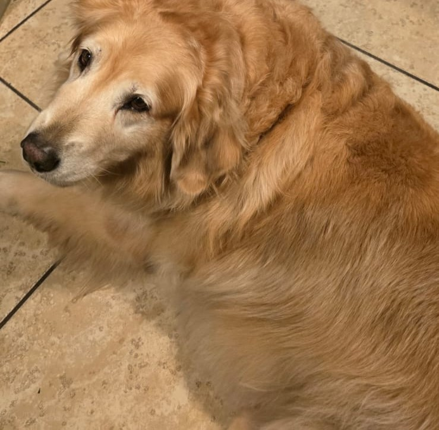

Rechazo
Sacas un juguete brillante e intentas que la criatura lo persiga.
Ella te mira con desinterés total y se acurruca en una esquina.
Escuchas un gruñido bajo de su estómago. Tiene hambre.
No parece nada contenta contigo en este momento.
Una criatura hambrienta no quiere jugar
Sacas un juguete brillante e intentas que la criatura lo persiga.
Ella te mira con desinterés total y se acurruca en una esquina.
Escuchas un gruñido bajo de su estómago. Tiene hambre.
No parece nada contenta contigo en este momento.